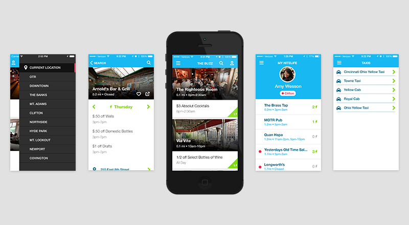
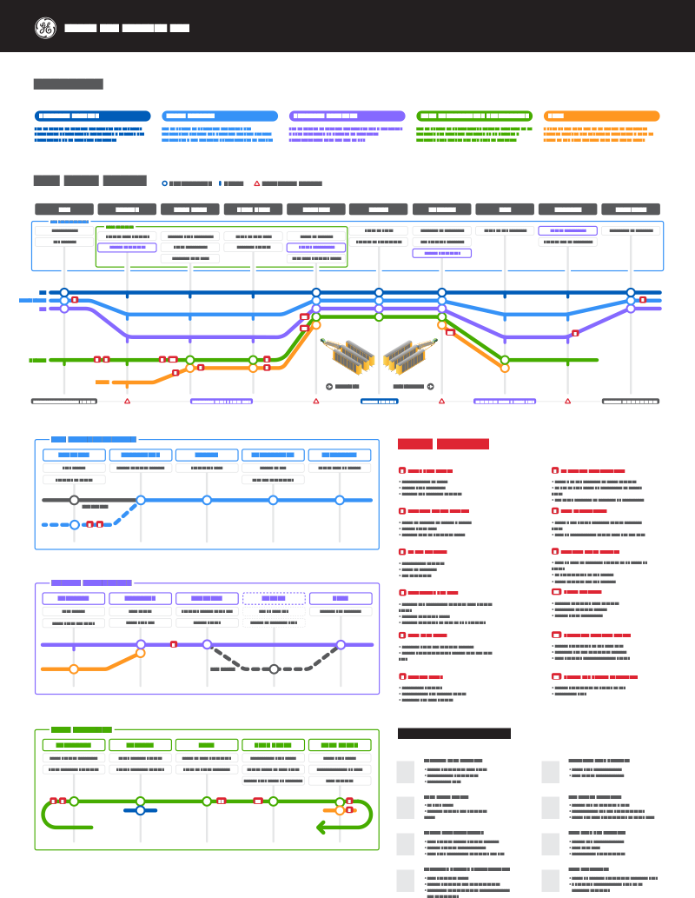

The Design Methodology II course prompt is simply to find a problem that inspires your team and design a solution for it. The course is graded on the final presentation (or pitch) of your team’s idea to fellow classmates and professors, which is then voted on by your peers. Our team was passionate about helping college students cook healthy meals, save money and maybe avoid the freshman fifteen.
Through surveys, personal food journals and interviews with other college students we synthesized some of the major pain points associated with their current cooking experiences.
Limited kitchen supplies, ingredients, and space all play roles in the way students choose to cook and plan meals for themselves.
Undergraduate students living off campus have a difficult time finding affordable, healthy and easy to make meal options. Limited kitchen supplies, ingredients, and space all play roles in the way students choose to cook and plan meals for themselves. Taking time to cook a meal each day currently seems like a daunting task with a hectic school schedule, which can result in spending more money eating out.
We put together core attributes that we felt our brand needed to possess in order to reach our target market.
Our team created nom, a set of products designed to improve the cooking experience and make it more approachable for college students.
Our team created nom, a set of products designed to improve the cooking experience and make it more approachable for college students. The “just add protein” kits come with detailed instructions and perfectly portioned ingredients for a single serving. Recipes can also be found inside the mobile application with step by step instructions and helpful tips explaining each ingredient being used. Most students living on or off campus have limited kitchen supplies, so we created utensil kits and basic spice kits that include flavor profiles and popular cuisines on the label.
The application design went through multiple phases of scenario mapping, wireframes and higher fidelity mock ups.
Both the packaging and application designs resulted in prototypes for the final presentation. nom was voted in as a finalist and was presented to other professors and students in the design college at the end of the course.
NiteLife
NiteLife was founded on the desire to have a better experience finding where to go out at night. Dave Johnson, Matt Regnold, Britney Bogard (my fellow co-founders) and myself could not find an existing solution that fulfilled our needs, so we created one.
We couldn’t find a product that gave bar and club owners the opportunity to directly market and connect with their customers, or give consumers an on-the-go solution that provided them the information they actually cared about.
NiteLife was origninally NiteLifeCam, with the concept of installing cameras inside of venues so that users could see what the crowd was like before going out. This was our teaser video we used to guage interest and collect early adopters' emails.
We couldn’t find a product that gave bar and club owners the opportunity to directly market and connect with their customers, or give consumers an on-the-go solution that provided them the information they actually cared about. The team went through many iterations when we first started talking about NiteLife: putting cameras inside of bars to let the users know what the crowd was like, hailing a cab through the app (sound familiar?), providing happy hour information by neighborhoods and many more.
Everyday in class, at the gym or out at bars we were sketching ideas about what we wanted to NiteLife to be and how we could improve.
The first version of NiteLife was a simple web application with the ability to view venues and their happy hour specials nearby. We went from a web application to a full iOS application within 8 months while the two main developers were on opposite coasts interning. Overtime we added features based on user feedback and added two members to our team, the Hoop siblings, to help us with marketing, design and copy writing.
This day alone we had over 100 downloads, needless to say, was considerably more than our previous single day high.
We pursued many different marketing campaigns including social media marketing, promotional videos, ‘free’ download cards and partnerships with local venues for events. Ultimately, our biggest successes in marketing was a tweet from the President of the University of Cincinnati who is extremely popular with the students on social media. President Ono’s tweet not only gave us a huge spike in downloads, but also an interview with a local Cincinnati blog. Tools like Hootsuite and advertising platforms through Facebook and Twitter enabled us to easily reach our target market with little to no advertising experience.

NiteLife 1.3 iOS app screenshots.
By the time NiteLife shut down we had over 1,000 downloads and active users in the Cincinnati area. Shortly after graduation we decided to close up shop and pursue other career opportunities. A lot of mistakes were made as we built our first business, but the amount we learned from the experience was more than worth the effort. Some things I would do differently if I had the chance:
Test more often. Due to our time constraints we weren’t able to move as quickly as we would have liked. Testing concepts and designs with end users would have allowed us to make decisions and build features more quickly.
Utilize existing platforms (Google, Yelp, Foursquare). We followed the “nail it before you scale it” mantra, but possibly to a fault. All of NiteLife’s data was manually added by us, which was limited to information online or who would answer our phone calls.
Hospital Scan Room Tool
The GE Global Research Center (GRC) funded a project through GE Digital to build a web based prototype for proof of concept. This was my first project at GE and possibly the freakin' coolest things I have ever worked on due to its domain and the technology we were using.
No matter how advanced medical technology has become, there remain constraints in the environment they are installed and operated in.
GE Discovery CT
There are constant advances in medical technology that improve imaging, performance and overall patient satisfaction. No matter how advanced medical technology has become, there remain constraints in the environment they are installed and operated in. Most large medical equipment utilizes a considerable amount of energy and thus produces a significant amount of heat. In order for these machines to operate efficiently their temperature must be managed without compromising patient comfort.
Initial site research was performed by the GRC, conducting user interviews to understand pain points of installing and operating GE scanners. Once we understood the science behind the concept we conducted our own interviews and created storyboards for the prototype. Utilizing modern web technologies including three.js and Web Workers we completed a prototype that allowed users to interact, visualize and run the solution.
If you are interested in hearing more, please contact me below!
mCrew
Rail yards are large and fast paced operations that can be difficult to manage. Hundreds of railcars come in and out every day carrying various cargo from coal to iPhones and even vehicles. In order to maximize efficiency of operations accurate locations and placements of each railcar is extremely important.
GPS and RFID railcar tracking is expensive and easily damaged or tampered with, so railcars can be tracked manually. To help maintain an accurate railcar inventory mCrew was designed to help yard workers manage and report work. mCrew is a multi-platoform logistics mobile application that can report train and rail car movements real time, in and out of network coverage.
mCrew is a multi-platoform logistics mobile application that can report train and rail car movements real time, in and out of network coverage.
mCrew is part of a larger product offering called RailConnect 360.
mCrew had some unique challenges due to rail yard locations and the work processes of their current users. Veteran rail yard workers enjoyed paper work orders during the day and entering their work on industrial windows tablets at the end of the shift, which has repercussions on data latency in the system. The previous solution was physically clunky and cumbersome to use, making it difficult to manage on the go. Rail yards are often outdoors with low internet connectivity, adding levels of complexity for usability in different weather conditions and offline syncing.
mCrew 2.0 was redesigned for iPad mini with a new information architecture and visual design to improve usability. Offline sync was implemented to improve collecting and updating work in locations with low connectivity. We designed multiple iterations to test outside in high sunlight and tried multiple rugged cases and styluses for users in colder weather wearing gloves. Some things I would do differently if I had the chance:
More diverse usability testing. We were only able to do one round of testing which made it difficult to get feedback on our solution in the varying environments.
Try different form factors. I joined the project when most of the research was complete and the decision to build an iOS application had been made. I would have liked the opportunity to try different form factors including different mobile devices and voice based interactions.
If you are interested in hearing more, please contact me below!
RAMPS
The railroad industry historically is considered “behind the times” when it comes to software and technology. One of the major railroads asked GE to help bring their automotive shipment operation into the 21st century to cut down on operation costs, improve efficiency and decrease missed shipments.
One of the major railroads asked GE to help bring their automotive shipment operation into the 21st century to cut down on operation costs, improve efficiency and decrease missed shipments.
8 inch lase up steel toed boots are required for visiting most railyard sites. Safety is the most important rule at any indistrial site, which you will be reminded of nearly every step of the way.
We asked our client to come to San Ramon with some of their end users for a kickoff workout. Our team facilitated an entire day of value stream mapping where we broke down their current process into major buckets under which we identified the humans, tools or systems and pain points. After the initial work out we strapped on our boots (literally) and went to visit their largest and smallest sites, seeing 4 in total. We interviewed end users in various roles and continued to build upon our value stream map.
Here is a look of the control room for one of hte largest automotive shippment facilities in the U.S.
Once the research was complete we synthesized what we learned and created concept storyboards for the future of automotive shipment on rail. The final deliverables were a journey map, personas, conceptual proposals and a schedule for work in the future months.

One of our deliverables was this journey map detailing the current system, personas, pain points and opportunities. The journey map and persona presentation were my primary responsibility for synthesis.
If you are interested in hearing more, please contact me below!